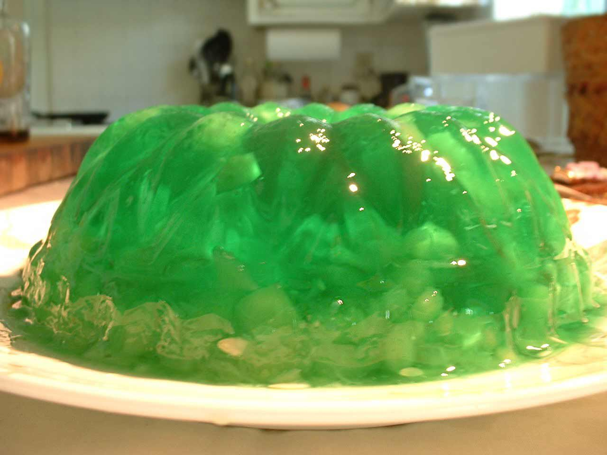

Jello Salad

Description
TThis truly is a unique taste combination; I think
it caused my brother Eddie a lifetime aversion to
horseradish. I on the other hand loved it. When grandma
passed away a few years ago we inherited her recipe
collection, including this one. I just found it this
weekend and had to make it. I didn't do a good job mixing
the cucumbers and pineapple in, so the salad is not as
evenly dispersed in the jello as I remember it. But it was
still delicious.
Ingredients
- 1 (6-ounce) package Jell-O lime gelatin
- 1 teaspoon salt
- 2 cups hot water
- 2 cups cold water
- 1 1/2 cups cucumbers, peeled and diced
- 3 tablespoons horseradish (or more if you want it spicier)
- 1/2 teaspoon grated onion
- 3/4 cup jelly, your fav flavor
- 2 tablespoons vinegar
- 1/2 teaspoon vanilla
- 1 1/2 cups diced or crushed drained canned pineapple
(you cannot use fresh pineapple with gelatins. The
bromelain enzyme in fresh pineapple will keep the
gelatin from bonding.)
Steps
- In a bowl, dissolve lime jello and salt in 2 cups of
hot water (don't use boiling water, just regular hot water).
- Add 2 cups cold water. Chill until slightly thickened
- the consistency of egg whites, about 30 minutes.
- Add jelly to small bowl, and mix with a spoon or
fork slightly to make it easier to spread
- In a separate bowl mix cucumber, horseradish, grated onion, and vinegar.
- Fold pineapple and cucumber mixture into jello. Pour into a jello mold
and chill for several hours (about 6) until gelatin sets.
- To remove jello from its mold, fill up a basin half-way with hot water.
Lower the jello mold into the hot water, metal side down, until the water
comes up almost to the edge of the mold. Keep it there 5 seconds and
remove. Place a plate on top of the jello mold and turn upside down. The
jello salad should just slide out.
Return to Home